MOMEN JUARA
Deskripsi pertandingan akan muncul di sini...
Menyiapkan aset 3D & media berkualitas tinggi
Klik layar atau tombol di bawah untuk masuk ke mode navigasi kamera.
Deskripsi pertandingan akan muncul di sini...
Deskripsi piala...
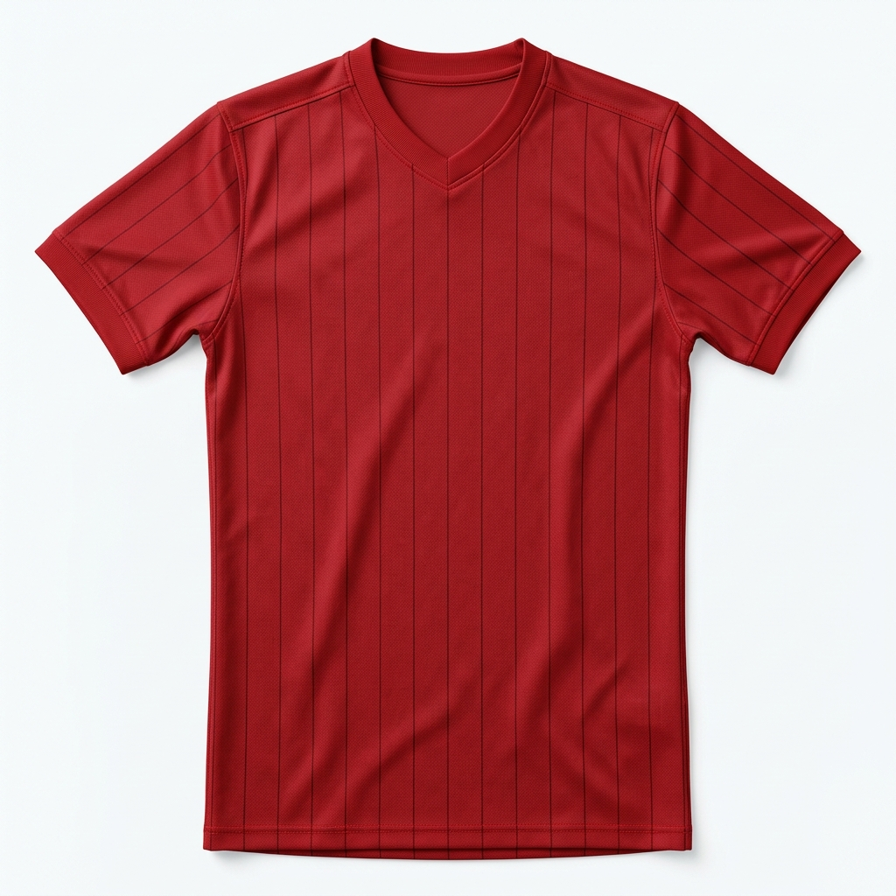
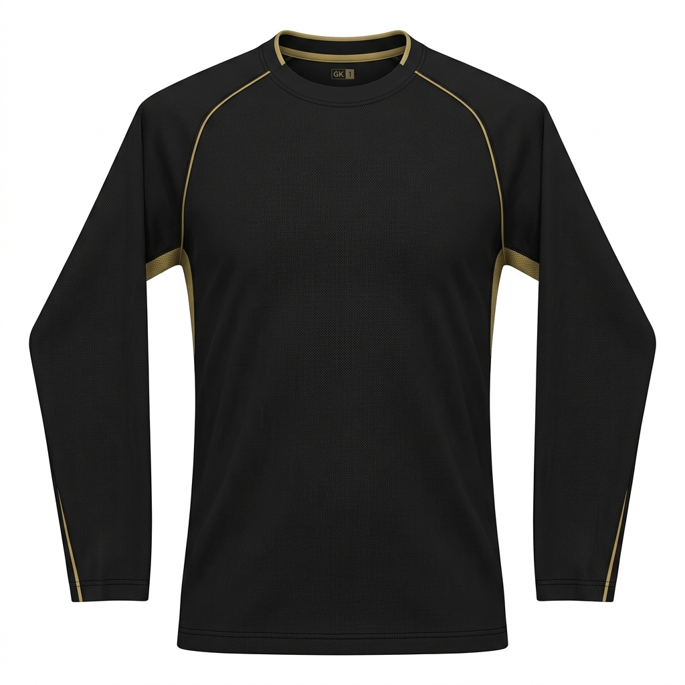


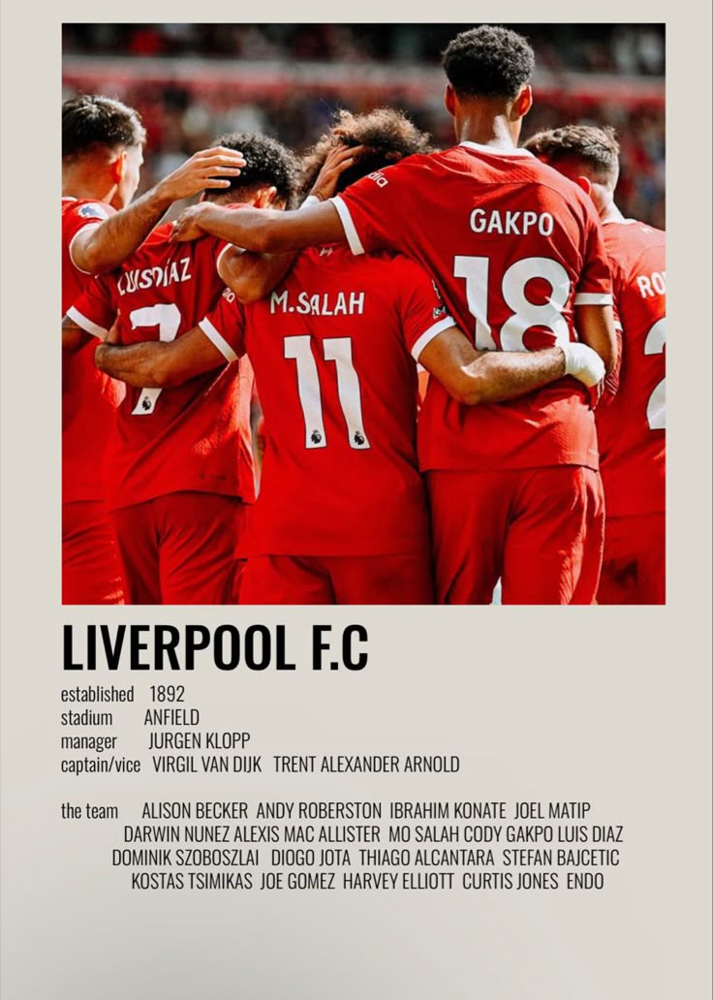
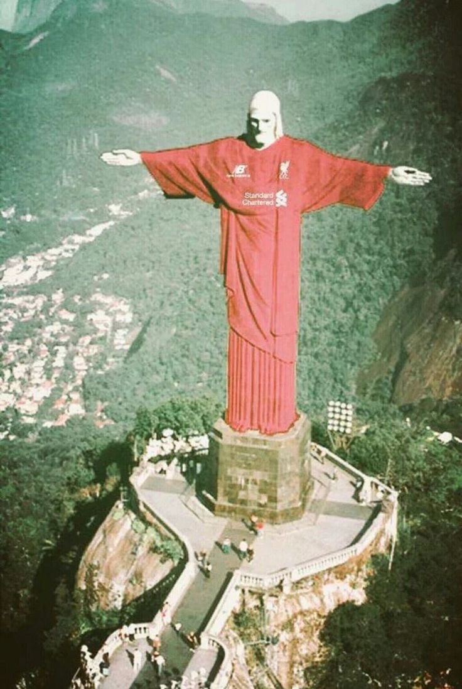
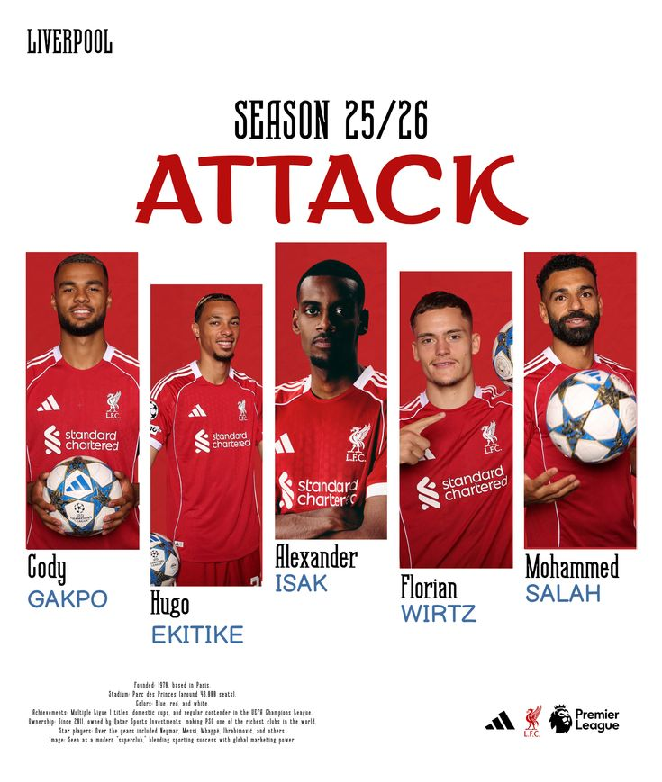
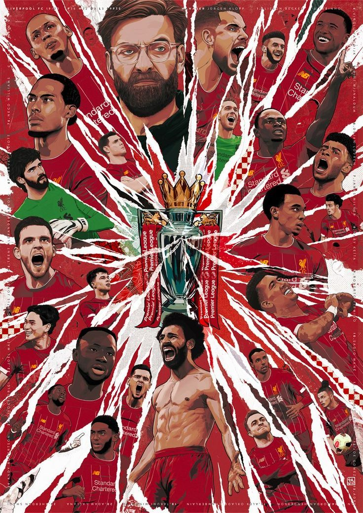

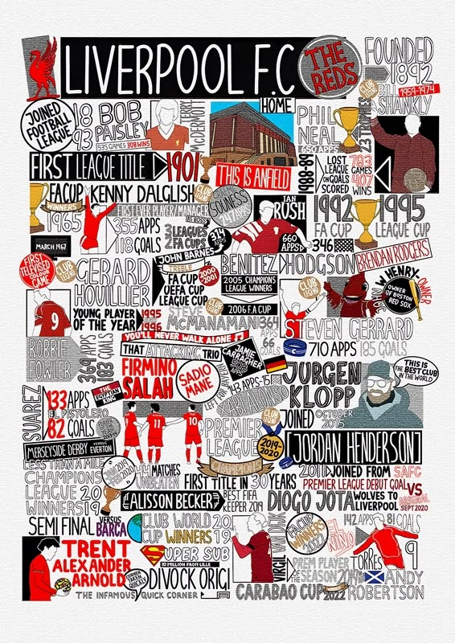
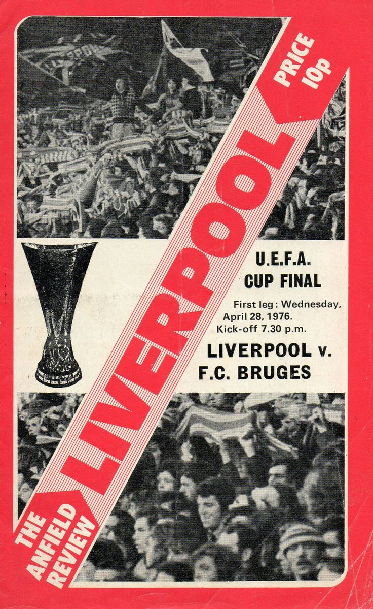
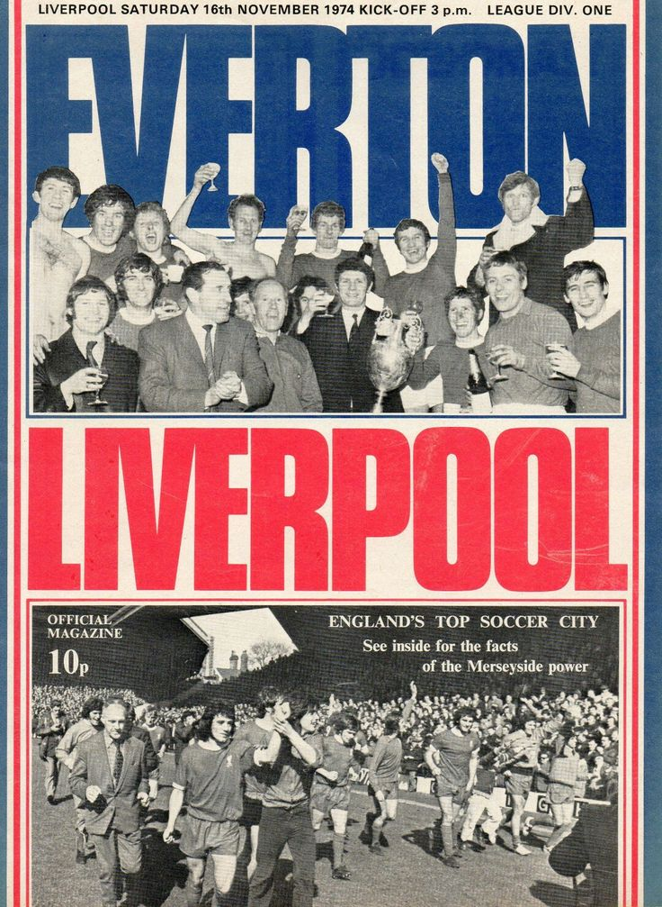
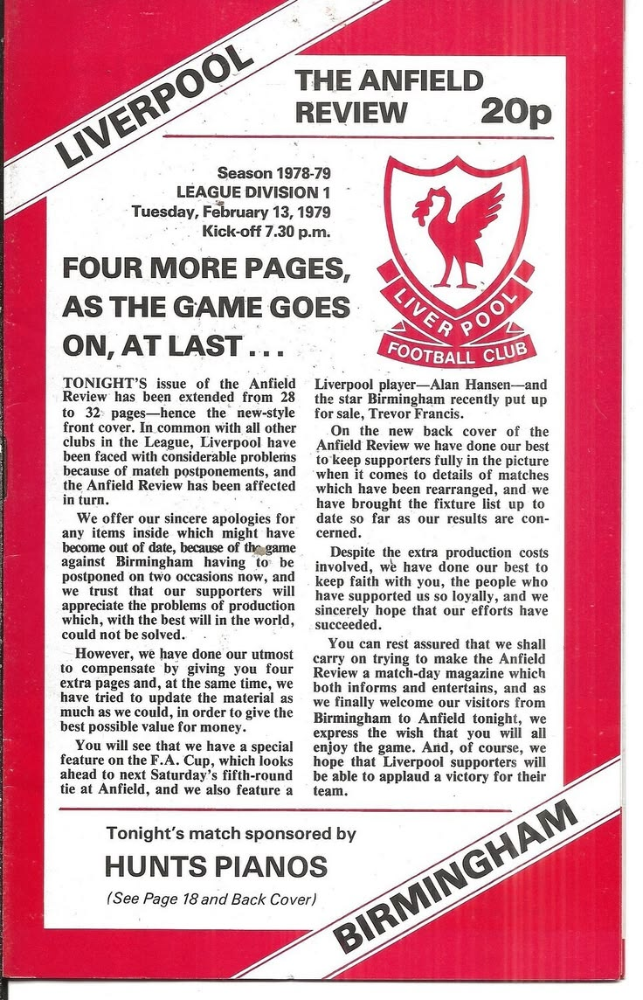
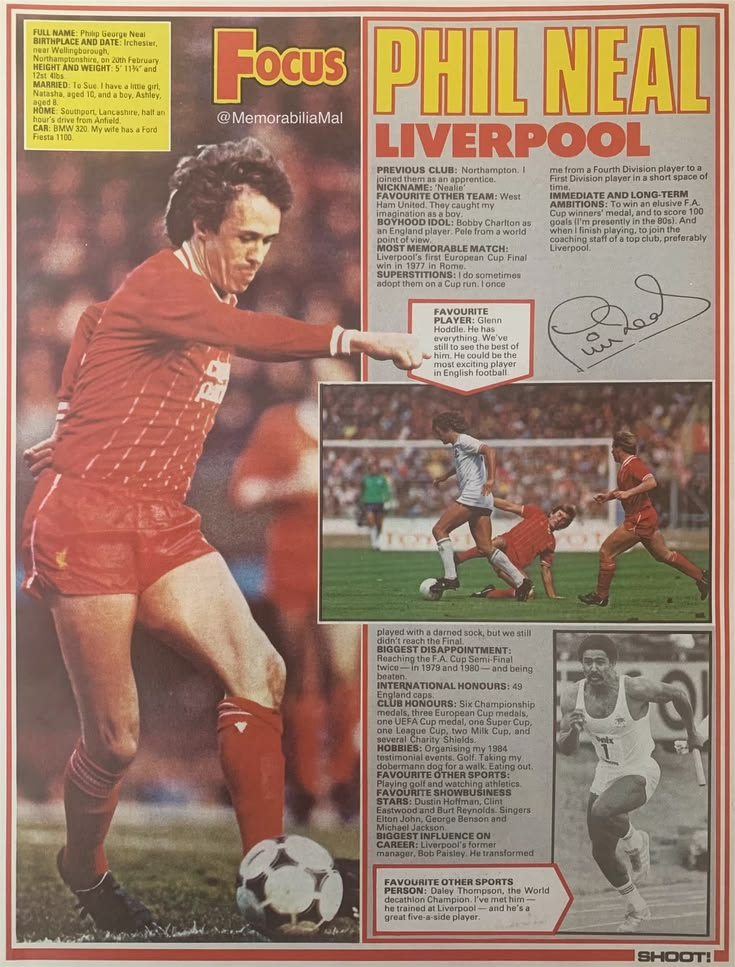
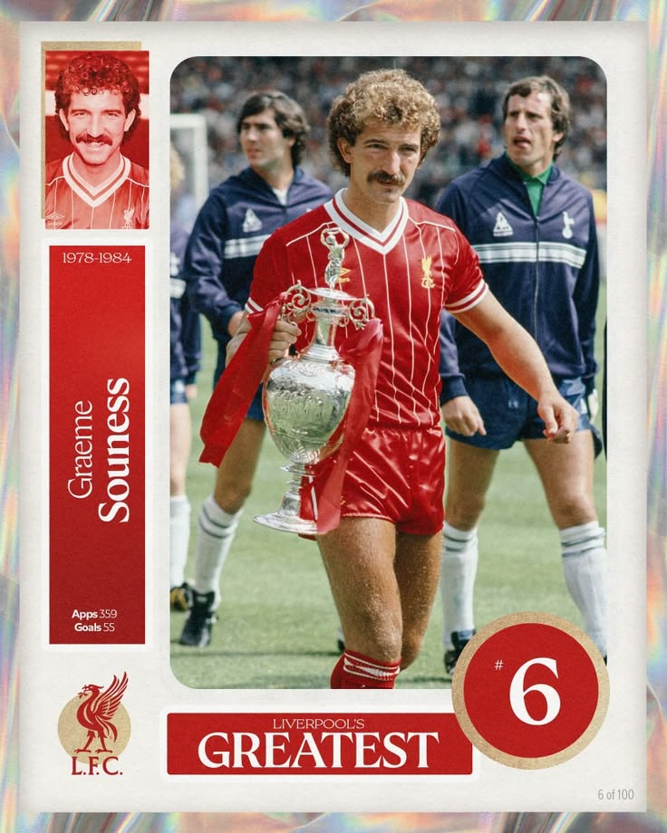
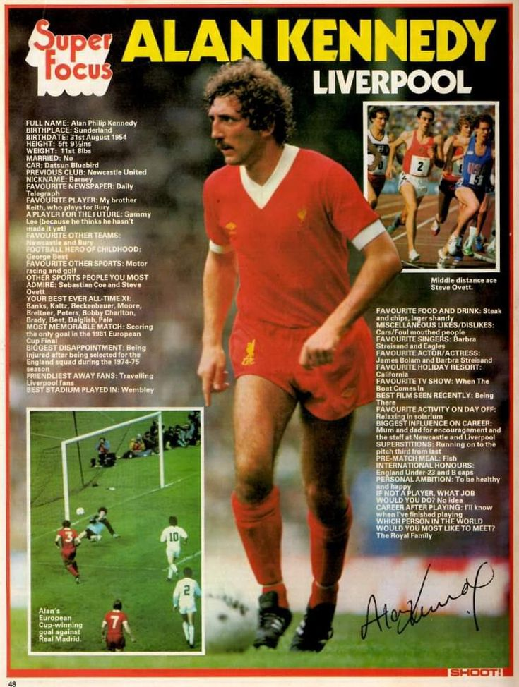